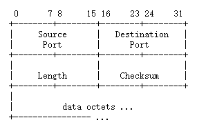

UDP
- UDP - User Datagram Protocol，用户数据报
- 特点 Features
- 无连接；最大努力交付best effort delivery；无需确认
- 面向报文，不拆分；不重装
- 没有流量控制、没有拥塞控制
- 首部开销小，最少8个字节，仅包括首部
- 支持组播、多播；用用于实时通信
- 报文 Packet
- Source Port is an optional field, when meaningful, it indicates the port of the sending process, and may be assumed to be the port to which a reply should be addressed in the absence of any other information. If not used, a value of zero is inserted.
- Destination Port has a meaning within the context of a particular internet destination address.
- Length is the length in octets of this user datagram including this header and the data. (This means the minimum value of the length is eight.)
- Checksum is the 16-bit one's complement of the one's complement sum of a pseudo header of information from the IP header, the UDP header, and the data, padded with zero octets at the end (if necessary) to make a multiple of two octets.
- 校验和 Check Sum
- 发送方
填上伪首部
全0填充校验和字段；全0填充数据部分
伪首部+首部+数据三部分采用二进制反码求和
求和结果填入校验和字段并发送UDP报文
注意：最高进位必须加进去
- 接收方
填上伪首部
伪首部+首部+数据三部分采用二进制反码求和
结果全为1则无差错；否则丢弃
- UDP vs TCP
- UDP只管发；TCP会控制整个通信过程
- UDP不会拆分报文；一个报文就是一个完整的消息；TCP会拆分成诺干字节，形成字节流
- UDP发送时无需缓存；TCP必须缓存才能发送，发多少取决于对方的接收窗口；只有被对方接收且确认过的报文才能移除缓存



- Reading